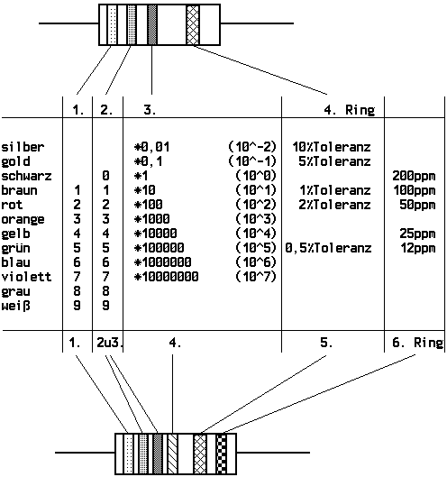

Previous
Next
TOC
Die Kennzeichnung von Widerständen
Farbcode für "through-hole"-Widerstände
Die Farben stehen für bestimmte Ziffern oder Anzahlen von Nullen,
die aneinandergehängt den Widerstandswert in Ohm angeben.
Auf einer Seite liegt der erste Ring dichter am Anschlußdraht als
auf der anderen. Diese Seite wird zum Ablesen des Werts am ein-
fachsten nach links gehalten. Die andere Seite ist meistens mit
einem goldenen oder silbernenen, seltener mit einem roten oder
braunen Ring versehen, den hält man dementsprechend nach rechts.
Dann liest sich der Code wie üblich von links nach rechts. Die
ersten beiden Ringe stehen für Ziffern, der dritte für eine ent-
sprechende Anzahl Nullen:

Es gibt auch Codes mit 5 Ringen, diese enthalten drei statt zwei
Ziffern vor dem Multiplikator. Da manchmal wegen Platzmangels die
Ringe auf beiden Seiten sehr dicht am Draht liegen, wird der Tole-
ranz-Ring in solchen Fällen breiter gemacht. Also den dicken Ring
nach rechts halten.
weiterblättern
Kapitel Die Kennzeichnung von Widerständen, Seite 1